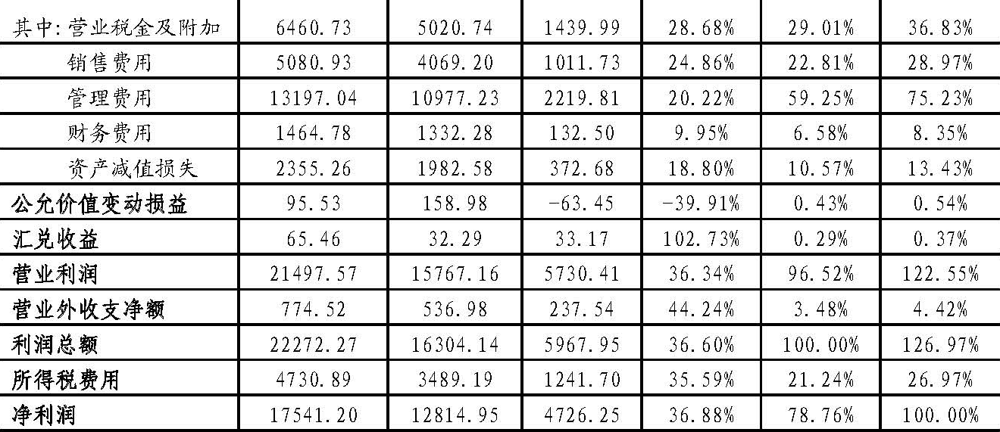
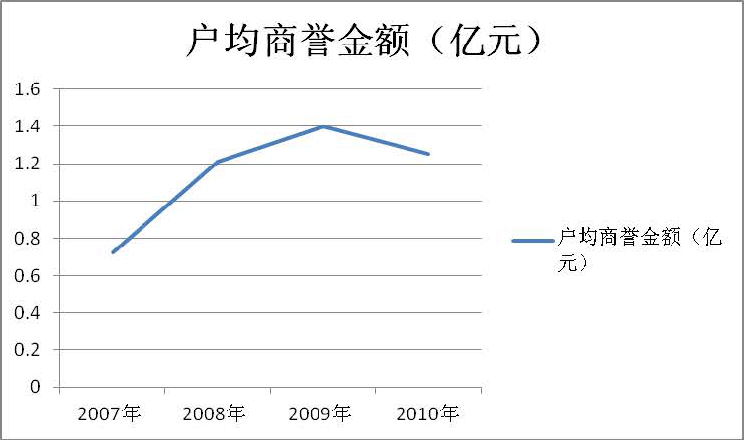
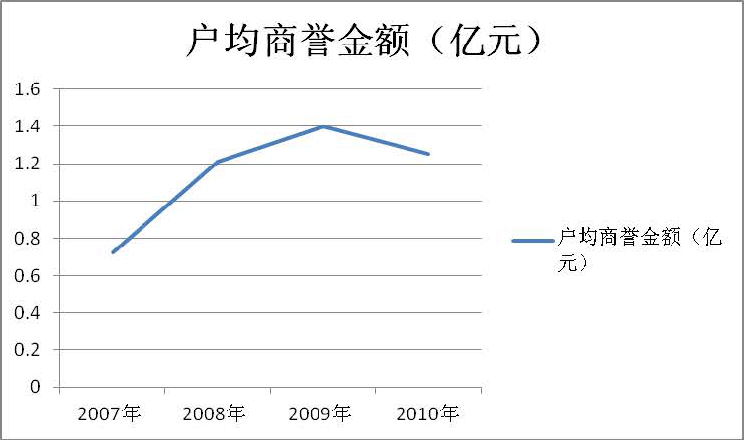

财政部会计司课题组日前完成了对我国沪深两市A股上市公司2010年年报的深度分析。分析结果表明，企业会计准则连续4年得到平稳有效实施，经济效果持续显现，内地与香港两地会计准则实现了持续趋同等效。现将我国上市公司2010年执行企业会计准则情况分析报告附后，供参考。
附件：我国上市公司2010年执行企业会计准则情况分析报告
财政部会计司课题组
我国上市公司2010年执行企业会计准则情况分析报告
自2011年1月18日陕国投A（000563）和S*ST圣方正（000620）公布2010年年度财务报告（以下简称年报）起，截至2011年4月30日，沪深两市共计2129家上市公司如期公布了2010年年报。其中，沪市上市公司902家，深市主板上市公司486家，深市中小板上市公司553家，创业板上市公司188家；金融类上市公司36家，非金融类上市公司2093家；同时发行A股和H股的上市公司（A+H股上市公司）66家。我们采用逐日盯市、逐户分析的方式监控了2129家上市公司2010年的年报披露，经过3个多月艰苦细致的工作，完成了对2129家上市公司2010年年报的深度分析。现将2129家上市公司2010年年报分析情况报告如下。
本报告侧重于企业会计准则在上市公司的执行情况分析，尤其是全面掌握各项具体准则在上市公司的实施情况。本报告共分为五个部分：一是上市公司基本情况分析，二是企业会计准则执行情况分析，三是上市公司执行企业会计准则存在的主要问题，四是结论，五是下一步工作。
一、上市公司基本情况分析
（一）上市公司2010年年报审计情况分析
2129家上市公司中，被出具标准审计意见的有2020家，占比为94.88%；被出具非标准审计意见的有109家，占比为5.12%。109份非标准审计意见中，84份为带强调事项段的无保留意见，占比为77.06%，占全部上市公司审计意见数的3.95%；17份为保留意见，占比为15.60%, 占全部上市公司审计意见数的0.80%；8份为无法表示意见，占比为7.34%，占全部上市公司审计意见数的0.37%。109份非标准审计意见中，108份为我国国内会计师事务所出具，仅深南电A（000037）1份被德勤华永会计师事务所出具了带强调事项段的无保留意见。
国际“四大”会计师事务所（以下简称“四大”）审计的上市公司家数为119家，占全部上市公司家数的5.59%。但是，这119家上市公司截至2010年年末的资产总额合计为722947.19亿元，在全部上市公司资产总额中的比重高达83.94%；2010年实现的利润总额为15527.80亿元，在全部上市公司2010年利润总额中的比重高达69.72%。
从2007年上市公司执行企业会计准则以来，绝大多数上市公司的年报被出具了标准审计意见（参见表1和图1），2007年、2008年和2009年连续3年每一年均超过了93%，2010年将近95%，注册会计师出具的审计意见不仅对年报数据的可靠性提供了合理保证，而且充分表明企业会计准则在我国上市公司连续4年得到平稳有效实施。
注：表中“占比”均指各种审计意见的份数占审计意见总份数的比重
图1 上市公司2010年年报审计意见类型统计图
2010年有109份年报被出具了非标准审计意见，其主要原因分析如下：
一是84份带强调事项段的无保留意见中，S*ST圣方（000620）等68家上市公司因持续经营能力出现问题被出具了非标准审计意见，占比为80.95%；亚星化学（600319）等5家上市公司因受到有关监管部门的调查被出具了非标准审计意见，占比为5.95%；方大炭素（600516）等4家上市公司因涉及诉讼被出具非标准审计意见，占比为4.76%；因其他原因被出具非标准审计意见的有7家上市公司，占比为8.34%。
二是17份保留意见中，中科健（000035）等5家上市公司因持续经营能力存在重大不确定性被出具非标准审计意见，占比为29.41%；深中华（000017）等9家上市公司因无法获取充分适当的审计证据被出具非标准审计意见，占比为52.94%；3家上市公司因重大事项影响财务报表数据而被出具非标准审计意见，占比为17.65%。
三是无法表示意见有8家上市公司，全部因无法实施有效审计程序，以获取充分适当的审计证据被出具非标准审计意见。
（二）上市公司2010年业绩状况分析
沪深两市2129家上市公司2010年实现利润总额和净利润分别为22272.09亿元和17541.20亿元，相比2009年实现的利润总额和净利润16304.14亿元和12841.95亿元，分别增加了5967.95亿元和4726.25亿元，增幅分别为36.60%和36.88%（有关情况如表2所示）。2010年在我国实施稳健货币政策的大环境下，16家银行类上市公司仍实现了8851.62亿元的利润总额和6842.16亿元的净利润，分别占全部上市公司利润总额和净利润的39.74%和39.01%，净利润增长率为33.33%，但落后于全部上市公司净利润增速3.55个百分点。16家银行类上市公司2010年实现利息收入21893.45亿元，占其营业总收入的比重86.79%，实现利息净收入（即利息收入扣除利息支出后的净额）14039.04亿元，占营业总收入的比重55.65%；2010实现手续费及佣金收入3186.76亿元,占营业总收入的比重为12.63%。
2010年，全年国内生产总值（GDP）401202亿元，比2009年增长10.4%。2010年2129家上市公司实现的营业总收入（包括非金融企业实现的营业收入、商业银行实现的利息收入、保险公司实现的保费收入、证券公司实现的手续费及佣金收入）合计174503.78亿元占GDP的比例高达43.50%，比2009年增长33.11%，增速比GDP加快22.71个百分点。

*2010年实现利润各组成项目占利润总额的比例。
**2010年实现利润各组成项目占净利润的百分比。
2010年营业利润对利润总额和净利润贡献为21497.57亿元，占2010年利润总额和净利润的百分比分别为96.52%和122.55%。管理费用对2010年沪深两市2129家上市公司营业利润的拖累较大，达到13197.04亿元，占利润总额和净利润的百分比为59.25%和75.23%。除营业利润外，营业外收支净额对利润总额的贡献仅为774.52亿元，占利润总额的3.48%，远远小于营业利润对利润总额的贡献，对上市公司的持续发展不构成长期影响。
可见，2010年我国沪深两市上市公司的主要利润来源仍为营业收入，经营业绩在企业的整体盈利能力中仍占主导地位。
（三）上市公司2010年财务状况分析
2010年末，沪深两市2129家上市公司资产总计和负债总计分别为861246.44亿元和738675.38亿元，同比2009年分别增加了134362.36亿元和111063.63亿元，增幅分别为18.48%和17.70%。资产同比增加的主要原因有三个方面：一是银行类上市公司发放的贷款及垫款余额2010年比2009年增加了51536.96亿元，占到2010年资产同比增加额的38.36%；二是货币资金余额2010年比2009年增加了34086.09亿元，占到2010年资产同比增加额的25.37%；三是持有至到期投资余额2010年比2009年增加了21466.31亿元，占到2010年资产同比增加额的15.98%。负债同比增加的主要原因有两个方面：一是银行类上市公司吸收存款及同业存放余额2010年比2009年增加了64828.04亿元，占到2010年负债同比增加额的58.37%；二是非金融类上市公司因材料、商品采购产生的应付账款余额2010年比2009年增加了15565.44亿元，占到2010年负债同比增加额的14.01%，这两个方面共同作用，占到2010年负债同比增加额的七成以上。值得关注的是，上市公司2010年新增应收票据达到了1538.99亿元，增幅高达50.74%；2010年新增应收账款高达2685.47亿元，这两类资产的变化，反映了我国上市公司2010年实现收入的质量还有待进一步提升。
2010年末，沪深两市2129家上市公司股东权益合计为122571.06亿元，2009年为99272.33亿元，同比增加了23298.73亿元，增幅为23.47%，主要原因有三个方面：一是未分配利润余额2010年比2009年增加了8391.89亿元，增幅为38.60%，占到2010年股东权益同比增加额的36.02%，主要来源于上市公司2010年实现的利润；二是资本公积余额2010年比2009年增加了7472.31亿元，增幅为26.86%，占到2010年股东权益同比增加额的32.07%，主要来源于上市公司2010年股票发行收入；三是股本余额2010年比2009年增加了3167.79亿元，增幅为10.61%，占到2010年股东权益同比增加额的13.60%，主要来源于上市公司2010年股票发行收入。
总体看来，2010年沪深两市2129家上市公司运用公允价值计量的金融资产在资产总额中的比重不大，交易性金融资产、可供出售金融资产和持有至到期投资2010年年末余额分别为4509.61亿元、51539.86亿元和84302.72亿元，占资产总额的比重分别为0.52%、5.98%和9.79%。
（四）上市公司2010年现金流量状况分析
沪深两市2129家上市公司2010年年末现金及现金等价物（以下统称现金）余额66229.66亿元，较2009年年末57173.03亿元净增加9056.63亿元，增幅15.84%。2129家上市公司2010年现金净增加额合计11042.34亿元，较2009年4250.73亿元增加6791.61亿元，增幅高达159.78%。这说明我国上市公司2010年现金增长迅速，增幅远远超过了2009年的增幅。
2129家上市公司中，2010年现金净增加额为正的有1288家，占比为60.50%；现金净增加额为负的有841家，占比为39.50%。这说明我国六成以上的上市公司2010年相比2009年现金有所增加。
2129家上市公司中，2010年经营活动现金流量为正的有1463家，占比为68.72%；经营活动现金流量为负的有666家，占比为31.28%。2010年经营活动产生的现金流量净额合计为26016.04亿元，较2009年减少3980.98亿元，降幅为13.27%，主要原因是上市公司2010年销售商品等收到的现金较2009年仅增加了38922.76亿元，未敌购买商品等支付现金的增加额，该增加额高达39777.57亿元。
2129家上市公司中，2010年投资活动现金流量为负的有1803家，占比为84.69%；投资活动现金流量为正的有326家，占比为15.31%。2010年投资活动现金净流出额为28444.28亿元，较2009年减少5835.47亿元，降幅为17.02%，主要原因是上市公司2010年收回投资（如处置股权）收到的现金较2009年增加19739.37亿元，超过了投资支付现金（如购买股权）的增加额，该增加额为13066.48亿元。
2129家上市公司中，2010年筹资活动现金流量为正的1239家，占比为58.20%；筹资活动现金流量为负的890家，占比为41.80%。2010年筹资活动现金流量净额13688.05亿元，较2009年增加5246.02亿元，增幅为62.14%，主要原因是上市公司2010年吸收投资收到的现金（如发行股票）较2009年增加6624.21亿元，远远超过了偿还债务等（如偿还银行借款）的增加额，该增加额为2933.52亿元。
（五）A+H股上市公司分析
沪深两市2129家上市公司中共有66家上市公司同时在香港发行了H股，目前这些公司除了按照企业会计准则在A股市场披露年报外，同时还按照香港会计准则在H股市场公布年报。分析表明，两地会计准则实现了趋同等效，而且得到了有效实施。分析发现，A+H股上市公司在内地与香港披露的年报净利润差异和净资产差异呈“双下降”态势，已经接近完全消除。
1.A+H股上市公司年报净利润差异分析
66家A+H股上市公司2010年按照香港财务报告准则报告的净利润为10810.27亿元，较按照企业会计准则报告的净利润10775.20亿元，高出35.07亿元，净利润差异率仅为0.33%。2007年53家A+H股上市公司的净利润差异率为4.69%，2008年57家A+H股上市公司的净利润差异率为2.39%，与2007年相比降幅达49.04%；2009年61家A+H股上市公司的净利润差异率为0.64%，与2008年相比降幅高达73.22%；2010年66家A+H股上市公司的净利润差异率为0.33%，与2009年相比降幅高达48.44%。这充分说明A+H股上市公司从2007年开始执行企业会计准则以来，按照两地会计准则报告的净利润差异呈逐年大幅度下降态势，2010年已经接近完全消除（参见表3和图2）。
图2：A+H股上市公司2007年—2010年两地报告中净利润差异率比较图
2010年66家A+H股上市公司中，中兴通讯（000063）等32家上市公司按照两地会计准则报告的净利润已经完全无差异，占比为48.48%。而在2007年时，53家A+H股上市公司中，中兴通讯（000063）等6家上市公司按照两地会计准则报告的净利润已经完全无差异，占A+H股上市公司总数的11.32%。
2.A+H股上市公司年报净资产差异分析
66家A+H股上市公司2010年按照香港财务报告准则报告的净资产（股东权益）为65295.11亿元，较按照企业会计准则报告的净资产65289.85亿元仅高出5.26亿元，净资产差异率不到0.01%。在2007年53家A+H股上市公司的净资产差异率为2.84%，2008年57家A+H股上市公司的净资产差异率为0.96%，与2007年相比降幅达66.20%；2009年61家A+H股上市公司的净资产差异率为0.22%，与2008年相比降幅高达77.08%；2010年66家A+H股上市公司的净资产差异率不到0.01%，与2009年相比降幅高达95.45%。A+H股上市公司净资产差异分析，同样说明A+H股上市公司从2007年开始执行企业会计准则以来，按照两地会计准则报告的净资产差异呈逐年连续大幅度下降态势，2010年已经接近完全消除（参见表4和图3）。
图3：A+H股上市公司2007年—2010年两地报告中净资产差异率比较图
2010年66家A+H股上市公司中，中兴通讯（000063）等35家上市公司按照两地会计准则报告的净资产已经完全无差异，占比为53.03%。在2007年时，53家A+H股上市公司中，中兴通讯（000063）等10家上市公司按照两地会计准则报告的净资产已经完全无差异，占A+H股上市公司总数的18.87%。
分析发现，A+H股上市公司现存的按照两地会计准则报告的净资产和净利润微小差异的项目主要是以前年度资产重估差异调整。
以上分析表明，企业会计准则实施四年来，A+H股上市公司大幅度消除了原有差异，基本上没有产生新的差异，按照两地会计准则编制的财务报告差异接近完全消除，进一步验证了企业会计准则与国际会计准则趋同的成果，而且从这一角度表明企业会计准则在上市公司得到了持续有效实施。内地准则与香港准则的等效，大幅度地降低了内地企业赴港上市的财务报告编报成本和融资成本，有助于加快内地企业赴港上市的步伐，有力地推动了内地企业“走出去”战略的贯彻落实，同时也有效地促进了两地资本市场的共同繁荣和发展。
（六）创业板上市公司分析
2129家上市公司中，创业板上市公司有188家，占比为8.83%。主要集中在设备制造业、计算机应用服务业、电子设备制造业和化学原料及化学制品制造业等几个行业。
分析发现，创业板上市公司整体而言具有以下特点：
1.创业板上市公司的营业收入、营业利润、利润总额、净利润和经营活动现金流量净额、现金净增加额2010年较2009年都增幅明显，其中，营业收入、经营活动现金流量净额、现金净增加额领先于上市公司整体水平，但经营业绩和经营活动现金流量净额在上市公司整体中所占比重极小，分别为0.45%和1.15%，这从一个侧面反映出我国创业板上市公司在上市公司整体中的地位还有待进一步加强（具体参见表5）。
188家创业板上市公司2010年实现营业收入合计782.81亿元，占全部上市公司营业收入174503.78亿元的0.45%，较2009年增加208.87亿元，增幅为36.39%，超出上市公司整体营业收入增幅3.28个百分点；2010年实现营业利润合计144.46亿元，占创业板上市利润总额的91.29%，占全部上市公司营业利润21497.57亿元的0.67%，较2009年增加32.79亿元，增幅为29.36%，低于上市公司整体营业利润增幅6.98个百分点；2010年实现利润总额合计158.24亿元，占全部上市公司利润总额22272.09亿元的0.71%，较2009年增加37.69亿元，增幅为31.27%，低于上市公司整体利润总额增幅5.33个百分点；2010年实现净利润合计134.29亿元，占全部上市公司净利润17541.20亿元的0.77%，较2009年增加31.27亿元，增幅为30.35%，低于上市公司整体净利润增幅6.53个百分点；2010年经营活动现金流量净额合计299.84亿元，占全部上市公司经营活动现金流量净额26016.03亿元的1.15%，较2009年增加45.28亿元，增幅为17.79%，超出上市公司整体经营活动现金流量净额增速31.06个百分点。
2.创业板上市公司业绩普遍增长，且利润主要来源于日常经营业务，整体而言，反映出创业板上市公司的盈利能力具备一定的支撑力。
创业板上市公司2010年实现营业收入782.81亿元，同比增长36.39%，92%的公司实现了营业收入同比增长。创业板上市公司2010年实现净利润134.29亿元，同比增长30.35%，85%的公司实现了净利润同比增长。创业板上市公司在业绩显著增长的基础上，业绩增长的质量也有所提高。表现为：一是业绩增长源于日常经营业务，非日常经营业务所产生的损益占比下降。创业板上市公司实现的利润总额中九成以上来源于日常经营业务，2010年度营业外收支净额等非日常经营业务产生的损益仅占利润总额的8.7%。二是呈现出一批高成长公司。2010年，创业板上市公司中，营业收入增幅超过100%的有8家，增幅在50%以上的有48家；净利润增幅超过100%的有7家，增幅在50%以上的有49家，且相当多创业板上市公司的成长保持了一定的持续性，广泛分布在信息技术、新材料、现代服务业及新能源等战略性新兴经济领域。
3.创业板上市公司2010年现金相对充裕。
2010年，创业板上市公司现金流量净增加额合计906.36亿元，远远大于经营活动产生的现金流量净增加额，占上市公司整体现金流量净增加额11042.34亿元的8.21%，较2009年增加625.18亿元，增幅高达222.34%，主要原因是创业板上市公司2010年筹资活动（如发行股票）产生的现金流量较2009年大幅增加。例如，燃控科技（300152）2010年筹资活动产生的现金流量净额为10.34亿元而2009年为-0.29亿元，增幅高达36.66倍。又如，宋城股份（300144）2010年筹资活动产生的现金流量为20.60亿元比2009年1.99亿元增加18.61亿元，增幅也高达9.35倍。另外，尽管大多数创业板上市公司2010年经营活动现金净流量为正，但是特锐德（300001）等38家创业板上市公司2010年经营活动的现金流出超出了现金流入。
4.创业板上市公司2010年年报均被出具了标准审计意见，从注册会计师鉴证的角度反映了创业板上市公司基本上都能够按照企业会计准则的规定编报2010年年报，对2010年的交易和事项进行会计处理。
5.IPO为创业板高新技术上市公司加大研发投入创造了有利条件。
188家创业板上市公司2010年研发支出总计36.00亿元，较2009年增长了38.1%，占上市公司整体研发支出109.58亿元的三分之一（32.85%），占创业板上市公司营业收入总额的比重达到4.60%之高。其中，97家上市公司研发投入增长率超过了营业收入增长，3家公司研发投入超过了亿元，同时还出现了一些重视以研发投入带动业绩增长的上市公司。截至2010年12月31日，创业板战略性新兴产业上市公司平均每家已获得发明专利2.5件，已获得实用新型专利7.4件，已获得外观设计专利2.8件；同时，平均每家已申请的发明专利为11.1件，已申请实用新型专利为5.4件，已申请外观设计专利为1.8件。和创业板的非战略性新兴产业上市公司相比，和国家高科技技术企业群体及规模以上工业企业相比，创业板战略性新兴产业上市公司在研发投入及知识产权方面都具有明显的优势。
6.在股权激励方面，188家创业板上市公司中只有合康变频（300048）和探路者（300005）两家上市公司2010年实施了股份支付计划，且均属于以权益结算的股份支付。其中，合康变频（300048）采用的是限制性股票形式，探路者（300005）采用的是股票期权形式。
二、企业会计准则执行情况分析
企业会计准则包括38项具体准则，基本上涵盖了我国企业会计实务中目前已经发生或者能够预见到的经济业务事项。根据沪深两市2129家上市公司公布的2010年年报，通过对38项具体准则进行逐项深度分析，进一步验证了企业会计准则连续四年实现了持续平稳有效实施的结论。限于篇幅，在此仅举例说明以下具体准则项目的执行情况，供参考：
1.存货准则
2129家上市公司中，发生存货业务的有2052家，占比为96.38%。存货2010年年末余额合计31845.81亿元，较2009年23498.72亿元增加了8347.09亿元，增长了35.52%。
年报显示，存货类别中，所占比重较大的主要是原材料、自制半成品和库存商品。68.48%的上市公司采用加权平均法作为发出存货的计价方法，未发现仍使用后进先出法的情况。存货准则已从2007年开始取消了后进先出法。
2010年，对存货计提了存货跌价准备的上市公司有1066家，占发生存货业务上市公司总数的51.95%，计提的存货跌价准备金额合计为189.79亿元，占存货2010年年末余额的0.60%，占2010年资产减值损失总额的8.06%。存货跌价准备2010年年末余额合计为368.73亿元，占存货2010年年末余额的1.16%。
分析发现，上市公司对存货计提存货跌价准备的原因主要有以下几方面：一是存货陈旧、过时、毁损、无使用价值和转让价值，积压、滞销、存在质量问题等；二是存货价格持续下跌；三是原材料价格下降使得存货可变现净值低于成本，原材料所生产产品的成本高于产品的销售价格；四是产品更新换代、部分产品环保要求提高已被淘汰等因素共同影响，导致产成品及相关的在产品、原材料的可变现净值低于成本。但是，部分上市公司对存货跌价准备的计提原因未作披露或仅进行了“可变现净值低于成本”的简单描述，说明上市公司计提存货跌价准备的披露还有待加强。
分析还发现，2010年对存货计提存货跌价准备的上市公司主要集中在制造业、采掘业、交通运输和仓储业等行业。比如，计提存货跌价准备金额最大的前20家上市公司中，制造业占了60%，采掘业占了20%，交通运输和仓储业占了10%。该20家上市公司2010年计提的存货跌价准备合计104.99亿元，占到该20家上市公司净利润的3.38%。
2.长期股权投资准则
2129家上市公司中，持有长期股权投资的有2042家，占比为95.91%。长期股权投资2010年年末余额合计8392.30亿元，较2009年增加2095.16亿元，增幅为33.27%。
年报显示，2042家持有长期股权投资的上市公司中，1286家上市公司存在对被投资单位不具有控制、共同控制或重大影响且在活跃市场中没有报价、公允价值不能可靠计量的权益性投资，占比为62.98%；1153家上市公司存在对联营企业的投资，占比为56.46%。这说明对子公司，对被投资单位不具有控制、共同控制或重大影响且在活跃市场中没有报价、公允价值不能可靠计量的权益性投资以及对联营企业的投资，是上市公司长期股权投资的主要类别。
分析发现，绝大多数上市公司都能够按照企业会计准则的规定，对被投资单位能够实施控制，以及不具有控制、共同控制或重大影响且在活跃市场中没有报价、公允价值不能可靠计量的长期股权投资采用成本法核算；对被投资单位具有共同控制或重大影响的长期股权投资采用权益法核算。但个别上市公司长期股权投资的会计处理值得关注，如某上市公司持有被投资单位40%的股份，采用了成本法核算，但未披露具体原因。
中兴通讯（000063）等9家上市公司2010年因减少投资、被投资单位增发股份等原因引发在联营企业或合营企业持股比例下降，但对被投资单位仍具有重大影响继续采用权益法核算，而确认了投资收益。尤其是，某上市公司2010年因此事项确认了2.58亿元的投资收益，占该公司投资收益总额的44.64%，超过了利润总额的一半，高达51.81%，对该公司的业绩影响较大。
3.投资性房地产准则
2129家上市公司中，存在投资性房地产的有833家，占比39.13%。
年报显示，833家上市公司均对投资性房地产的种类进行了披露。其中，投资性房地产包括房屋、建筑物的有823家，占存在投资性房地产的上市公司总数的98.80%；包括土地使用权的有203家，占存在投资性房地产的上市公司总数的24.37%；房屋、建筑物和土地使用权都存在的有193家，占存在投资性房地产的上市公司总数的23.17%。
存在投资性房地产的833家上市公司中，806家上市公司对投资性房地产采用了成本计量模式，占存在投资性房地产的上市公司总数的96.76%；仅深发展A（000001）等27家上市公司采用了公允价值模式对投资性房地产进行后续计量，占存在投资性房地产的上市公司总数的3.24%。投资性房地产公允价值计量产生的公允价值变动净收益为36.24亿元，仅占采用公允价值模式对投资性房地产进行后续计量的27家上市公司净利润的1.90%。这说明我国上市公司能够按照企业会计准则的要求，谨慎选择投资性房地产的后续计量模式，投资性房地产采用公允价值计量对上市公司影响不大。
分析发现，投资性房地产公允价值确定的方法主要有以下三类：一是房地产评估价格（15家上市公司），二是参考同类同条件房地产的市场价格（9家上市公司），三是实地调查取得的价格（1家上市公司）。但是，泛海建设（000046）和交通银行（601328）等2家上市公司未披露投资性房地产的公允价值确定方法，值得关注。
陕国投A（000563）等108家上市公司在2010年发生了投资性房地产类型的转换，占存在投资性房地产的上市公司总数的12.97%。其中，将固定资产、无形资产转为投资性房地产的有66家，占存在投资性房地产类型转换的上市公司总数的61.11%；将投资性房地产又转回固定资产、无形资产的有28家，占存在投资性房地产类型转换的上市公司总数的25.93%；将存货转为投资性房地产的有12家，占存在投资性房地产类型转换的上市公司总数的11.11%；将投资性房地产又转回存货的有2家，占存在投资性房地产类型转换的上市公司总数的1.85%。这些值得关注。
另外，分析未发现上市公司2010年发生投资性房地产后续计量模式变更的情况。投资性房地产准则不允许企业将投资性房地产从公允价值模式转为成本模式。
4.固定资产准则
2129家上市公司中，存在固定资产的有2112家，占比为99.20%。
年报显示，丽珠集团（000513）等328家上市公司2010年发生了固定资产大修理费，占全部上市公司家数的15.41%。其中，红太阳（000525）等18家上市公司发生的固定资产大修理费对公司净利润的影响较大（占净利润的比重超过50%）。另外，多数上市公司均未披露固定资产大修理费的会计处理方式，这反映出上市公司固定资产大修理费的披露有待加强。
煤气化（000968）等219家上市公司2010年存在安全生产费，占全部上市公司家数的10.29%，中国铝业（601600）等50家上市公司2010年存在维简费，占全部上市公司家数的2.35%。从行业分布来看，基本上属于化工、能源开采等高危行业。
5.无形资产准则
2129家上市公司中，存在无形资产的有2047家，占比为96.15%。
年报显示，存在无形资产的2047家上市公司中，拥有土地使用权的有1834家，占比为89.59%；拥有软件的有1434家，占比为70.05%；拥有专利权的有500 家，占比为24.43%；拥有特许经营权的有372家，占比为18.17%；拥有商标权的有321家，占比为15.68%；拥有非专利技术的有209家，占比为10.21%；拥有著作权的有30家，占比为1.47%（参见表6）。由此可见，土地使用权、软件、专利权、特许经营权、商标权、非专利技术和著作权是我国上市公司无形资产的主要构成内容。
分析发现，上海梅林（600073）等13家上市公司存在使用寿命不确定的无形资产，其中，属于商标权的有6家（占比为46.15%）、特许经营权的有2家（占比为15.38%）、非专利技术的有2家（占比为15.38%）、土地使用权的有1家（占比为7.69%）、专利权的有1家（占比为7.69%）、高尔夫权证的有1家（占比为7.69%），这些无形资产值得关注。11家上市公司对使用寿命不确定的无形资产进行了减值测试，除某上市公司对专利权计提了620.75万元的减值准备外，其余10家上市公司的使用寿命不确定的无形资产均未发生减值。另外，华意压缩（000404）和诺普信（002215）未对使用寿命不确定的无形资产进行减值测试，值得关注。
2129家上市公司中，2010年投入研发支出的有407家，占比为19.12%，主要集中在机械、设备制造业、医药、生物制品业、矿产冶炼制造业和信息技术业。在投入研发支出的407家上市公司中，361家上市公司对无形资产研发活动的研究阶段和开发阶段的划分标准进行了披露，占发生研发支出的上市公司家数的88.70%，但两个阶段划分标准均为企业会计准则的相关规定。同时，多数上市公司在披露研究阶段和开发阶段时，只是引用了企业会计准则的相关规定，并没有结合公司的实际情况进行个性化披露，没有反映出公司的实际生产、经营及研发情况，这说明上市公司无形资产研发的信息披露还有待进一步加强。91家上市公司披露了开发支出的资本化金额，占发生研发支出的上市公司家数的22.36%。
分析发现，大多数上市公司普遍采用年限平均法（即直线法）对使用寿命有限的无形资产进行摊销。
6.非货币性资产交换准则
2129家上市公司中，2010年发生非货币性资产交换的有11家上市公司，占比为0.52%。
年报显示，这11家上市公司发生的非货币性资产交换均具有商业实质且换出和换入资产的公允价值均能够可靠计量，因此，按照非货币性资产交换准则的规定采用公允价值进行了计量。长期股权投资、固定资产和无形资产是上市公司非货币性资产交换的主要资产形式。
分析发现，有2家上市公司在非货币性资产交换中还支付了补价，按照企业会计准则规定，应以换出资产的公允价值加上支付的补价作为换入资产的成本，进而确认相关损益。但该2家上市公司直接以换出资产的公允价值作为换入资产的成本，进而确认了相关损益，支付的补价未进行处理，值得关注。
7.资产减值准则
2129家上市公司中，发生资产减值的有2117家，占比为99.44%。
年报显示，2117家上市公司2010年发生的资产减值损失合计2355.26亿元，占到上市公司整体利润总额的10.57%，较2009年增加372.68亿元，增幅为18.80%。从资产减值损失的构成来看，金融类上市公司的资产减值损失主要集中在商业银行类上市公司的贷款减值损失，非金融类上市公司的资产减值损失中存货跌价损失、固定资产减值损失和坏账损失所占比重最大。
发生资产减值的2117家上市公司中，多数上市公司都披露了非流动资产公允价值的确定方法、资产预计的未来现金流量、涵盖期间和折现率等信息。
分析发现，上市公司进行资产减值测试时，对于可收回金额披露的详细程度有待进一步提高。发生资产减值的2117家上市公司中，仅华能国际（600011）等6家上市公司明确披露了非流动资产可收回金额的具体确定方法；316家上市公司对非流动资产的可收回金额的确定方法未作任何提及，占到全部上市公司家数的14.84%之多；另外，还有一些上市公司没有充分披露资产减值的迹象，这些都值得关注。
2129家上市公司中，存在商誉的有741家,占比为34.81%。其中,对商誉进行了减值测试的有526家上市公司，占存在商誉的上市公司家数的70.99%；未对商誉进行减值测试的有215家上市公司，占存在商誉的上市公司家数的29.01%，值得关注。
对商誉进行了减值测试的526家上市公司中，对商誉进行了减值测试并计提了减值准备的有72家上市公司，占存在商誉的上市公司家数的9.72%，计提的商誉减值准备合计为6.62亿元，占全部上市公司2010年资产减值损失总额的0.28%；其中，对商誉减值迹象作了披露的有17家上市公司，占存在商誉的上市公司家数的2.29%，占对商誉进行了减值测试并计提了减值准备的上市公司家数的23.61%；未对商誉减值迹象进行披露的有55家上市公司，占存在商誉的上市公司家数的7.42%，占对商誉进行了减值测试并计提了减值准备的上市公司家数的比例高达76.39%，值得关注。
对商誉进行了减值测试且未发生减值的有454家上市公司，占存在商誉的上市公司家数的61.27%。可见，我国上市公司持有的商誉这一特殊资产多数在2010年未发生减值。2010年上市公司商誉减值情况具体参见表7。
*各项目对应的上市公司家数占存在商誉的上市公司家数的比例。
**各项目对应的上市公司家数在2129家上市公司中所占比例。
8.股份支付准则
2129家上市公司中，2010年实施了股份支付计划的有73家，占比为3.43%。
年报显示，2010年实施了股份支付计划的73家上市公司中，以权益工具结算的有68家上市公司，占比为93.15%；以现金结算的有8家上市公司，占比为10.96%；同时具有以权益结算和现金结算的有3家上市公司，分别为得润电子（002055）、华菱钢铁（000932）和中国远洋（601919），占比为4.11%。股份支付的授予对象多为上市公司的董事、监事、高级管理人员以及业务骨干。
2010年，股份支付计划对股东权益的影响金额为15.64亿元，占实施股份支付计划的上市公司股东权益总额的0.12%；股份支付计划对利润总额的影响为11.08亿元，占实施股份支付计划的上市公司利润总额的0.41%，这说明我国上市公司2010年实施的股份支付计划对公司影响较小。
股份支付计划以权益结算的68家上市公司中，采用限制性股票作为支付工具的有17家，采用股票期权作为支付工具的有52家，同时采用这两种支付工具的有1家，为永新股份（002014）。
分析发现，这68家上市公司中，有45家上市公司采用“布莱克-斯科尔斯-默顿”模型（即B-S-M模型）估计所授予的期权的公允价值，这说明B-S-M模型是目前我国上市公司估计股票期权公允价值的主要模型，这为提高该模型在我国的适用性提供了丰富的企业实践，但是使用该模型需要考虑的各种因素尤其是如何结合我国实际情况进行应用值得进一步研究。另外，诺普信（002215）等4家上市公司未明确披露股份支付工具公允价值的确定方法，值得关注。
股份支付计划以现金结算的8家上市公司，全部以现金股票增值权作为支付工具。
2010年实施股份支付计划的73家上市公司中，芭田股份（002170）等35家上市公司修改了股份支付计划，占比为47.95%；兴发集团（600141）等3家上市公司取消了股份支付计划，占比为4.11%，值得关注。
2010年实施股份支付计划的73家上市公司中，中国神华（601088）等4家上市公司采用了期限条件作为可行权条件，占比为5.48%；海南海药（000566）等17家公司采用了业绩条件作为可行权条件，占比为23.29%。这说明在确定可行权条件时，我国上市公司目前更多考虑的是公司的业绩水平。另外，顺络电子（002138）等52家公司未明确披露可行权条件，值得关注。
9.债务重组准则
2129家上市公司中，2010年完成了债务重组的有252家，占比为11.84%。
年报显示，2010年因债务重组产生的营业外收支净额为79.87亿元，占全部上市公司利润总额的0.36%，其中，190家上市公司作为债务人获得了债务重组收益81.82亿元，101家上市公司作为债权人因让步承担债务重组损失1.95亿元，39家上市公司同时作为债权人和债务人完成了债务重组。
2010年完成债务重组的252家上市公司多数都披露了债务重组对营业外收支的影响金额，但披露债务重组具体内容的详尽程度各不相同，值得关注。只有少数上市公司披露了债务重组过程中所采用的公允价值确定方式。
分析发现，与控股股东或控股股东的子公司完成债务重组的有 11家上市公司，占2010年完成债务重组的上市公司家数的4.37%；实施破产重整的有6家上市公司，占2010年完成债务重组的上市公司家数的2.38%；实施和解的有4家上市公司，占2010年完成债务重组的上市公司家数的1.59%。上市公司实施破产重整及和解程序的主要原因是公司因无力清偿到期的债务。
2010年完成债务重组的252家上市公司中，长江投资（600119）等26家上市公司以资产清偿债务方式完成了债务重组，占比为10.32%；ST唐陶（000856）等55家上市公司修改了债务条件，占比为21.83%；另有13家上市公司采用两种以上方式组合进行了债务重组，占比为5.16%；其余上市公司未披露债务重组的类型，值得关注。
2010年完成债务重组的252家上市公司中，116家上市公司未对债务重组的完成日及确定方法进行披露，占比高达46.03%；93家上市公司对债务重组的完成日及确定方法的披露不明确，占比为36.90%；这些都值得关注。有8家上市公司因债务重组被出具了非标准审计意见，ST欣龙（000955）等26家上市公司的债务重组损益在净利润中所占比重超过了100%，这些也都值得关注。
10.或有事项准则
2129家上市公司中，存在或有事项的有982家，占比为46.12%。
分析发现，存在或有事项的982家上市公司中，确认了预计负债的有392家，占比为39.92%。未决诉讼、产品质量保证和债务担保是上市公司确认预计负债的主要类型。确认预计负债的392家上市公司中，发生未决诉讼的140家，占比为35.71%；发生产品质量保证的有105家，占比为26.79%；发生债务担保的有80家，占比为20.41%；涉及弃置费用的有25家，占比为6.38%；确认亏损合同的有23家，占比为5.87%；其他类型的，占比为4.84%。需要改进的是，根据职工薪酬准则的规定，上市公司确认的辞退福利应当在应付职工薪酬而不是在预计负债反映。
22家上市公司2010年因计提弃置费用确认预计负债197.25亿元，是确认预计负债金额中最大的一项。这22家上市公司绝大数是能源、煤炭、金属制造和化工行业的上市公司，符合国家相关政策导向。其中，中国石油（601857）和中国石化（600028）2010年计提的弃置费用金额最大，合计达195.07亿元，占到了22家上市公司2010年计提的弃置费用总额的98.89%。
分析发现，个别上市公司因确认预计负债对当期经营业绩影响巨大，预计负债的确认金额占净利润比重超过了100%，某上市公司2010年确认预计负债金额竟占到了净利润的655.85%，值得关注。另外，在存在预计负债的所有上市公司中，绝大部分上市公司未披露预计负债的“可能性”的判断依据，也值得关注。
11.收入准则
年报显示，2129家上市公司中，仅有12家上市公司2010年没有实现营业收入，且均为ST公司，占比为0.56%。
分析发现，2117家上市公司2010年实现营业总收入174503.78亿元，较2009年增加了43401.94亿元，增幅为33.11%。销售商品收入、提供劳务收入、建造合同收入、利息收入、手续费及佣金收入和保费收入是上市公司实现收入的主要类型，尤其是，销售商品收入、提供劳务收入和建造合同收入占营业总收入的83.29%，是上市公司实现收入的最主要来源，公司家数也多达2093家。利息收入、保费收入和手续费及佣金收入主要是由金融类上市公司实现，虽然公司家数只有36家，但其实现的收入占营业总收入的比重达到了16.71%。
294家上市公司2010年营业收入相比2009年下降，其余1823家公司2010年营业收入相比2009年都有不同程度的上升，其中，中国石化（600028）、中国石油（601857）和上海汽车（600104）增加金额分居前三位。
2129家上市公司中，2010年营业收入相比2009年变动幅度超过50%的有421家，占比为19.77%；但大多数上市公司2010年营业收入相比2009年变动幅度仍保持在50%之内，占比为80.23%；其中，382家上市公司2010年营业收入增幅超过50%，占营业收入变动幅度超过50%的上市公司家数的90.74%；39家上市公司2010年营业收入降幅超过50%，占营业收入变动幅度超过50%的上市公司家数的9.26%。中恒集团（600252）等86家上市公司2010年营业收入涨幅超过100%，ST兴业（600603）等6家上市公司2010年营业收入降幅达到或超过100%。
2129家上市公司中，深发展A（000001）等11家上市公司实施了奖励积分计划。分析发现，这11家上市公司都将销售产生的应计促销积分计入了递延收益，符合企业会计准则中对销售产品或提供劳务的同时授予客户奖励积分会计处理的相关规定。
12.所得税准则
2129家上市公司中，2010年存在年所得税费用的公司有2040家，占比为95.82%。
分析发现，1968家公司存在永久性差异，占比为92.44% ,永久性差异涉及的金额为1206亿元，具体项目主要包括: 研发支出加计扣除的部分、免税收入、超过标准的业务招待费、非公益性捐赠支出、罚款支出以及税收滞纳金等。799家公司存在递延所得税负债，占比为37.53%，涉及的项目主要有：计入其他综合收益的可供出售金融资产公允价值变动、交易性金融资产等金融工具的公允价值变动、非同一控制企业合并取得的可辨认资产账面价值（公允价值）大于计税基础、固定资产评估增值、无形资产及其他资产评估增值和投资性房地产公允价值变动等。1925家上市公司存在递延所得税资产，涉及的项目主要包括：资产减值准备、税前弥补亏损、预计负债等。我国上市公司2010年实际负担的企业所得税率为21.24%，低于25%的法定企业所得税税率，说明上市公司实际上普遍享受了企业所得税优惠，企业所得税法实施对上市公司业绩贡献显著。
13.企业合并准则
2129家上市公司中，2010年完成企业合并的有450家，占比为21.14%。
年报显示，2010年完成企业合并的450家上市公司中，有45家上市公司同时完成了同一控制下的企业合并和非同一控制下的企业合并，占比为10.00%；新兴铸管（000778）等165家上市公司完成了同一控制下的企业合并，占比为36.67%；华天酒店（000428）等330家上市公司完成了非同一控制下的企业合并，占比为73.33%。完成企业合并的450家上市公司中，属于控股合并的有431家，占比为95.78%；属于吸收合并的有15家，占比为3.33%。
分析发现，2010年因企业合并产生的商誉为121.15亿元，计入营业外收入的金额0.30亿元。7家上市公司2010年完成了反向购买。这些值得关注和进一步研究。
14.金融工具确认和计量准则
2129家上市公司中，2010年年末持有交易性金融资产的有446家，占比为20.95%，交易性金融资产的种类主要是股票和公司债券，金额合计为4509.61亿元，占全部上市公司资产总额的0.52%；2010年年末存在持有至到期投资的有102家，占比为4.79%，金额合计为84302.72亿元，占全部上市公司资产总额的9.79%；2010年年末持有可供出售金融资产的有406家，占比为19.07%，金额合计为51539.86亿元，占全部上市公司资产总额的5.98%；2010年年末存在应收款项的有2101家，占比为98.68%，金额合计为29200.26亿元，占全部上市公司资产总额的3.39%；2010年年末存在交易性金融负债的有82家，占比为3.85%，金额合计为4579.97亿元，占全部上市公司负债总额的0.62%。
分析发现，2129家上市公司中，仅852家上市公司对金融工具的分类依据进行了披露，占比仅为40.02%，这说明六成上市公司未披露金融工具的分类依据，值得关注。
交易性金融资产公允价值变动损益是上市公司公允价值变动收益的最常见项目。2129家上市公司中，交易性金融资产产生公允价值变动损益的有397家，占比为18.65%，交易性金融资产公允价值变动产生的收益合计为54.27亿元，仅占全部上市公司利润总额的0.24%。其中，200家上市公司的交易性金融资产公允价值变动产生收益78.07亿元，197家上市公司的交易性金融资产公允价值变动产生损失23.80亿元。2129家上市公司中，交易性金融负债产生公允价值变动损益的有67家，占比为3.15%，交易性金融负债公允价值产生的收益合计为0.24亿元，占全部上市公司利润总额比重不足0.01%，其中，32家上市公司的交易性金融负债公允价值变动产生收益3.14亿元，35家上市公司的交易性金融负债公允价值变动产生损失2.90亿元。这反映了我国上市公司在二级市场上进行股票、公司债券投资较少，股价变动对公司业绩影响极小。
2129家上市公司中，因衍生工具、套期保值业务等产生公允价值变动损益的有29家，占比为1.36%，衍生工具、套期保值业务等产生的公允价值变动损失合计为12.80亿元，其中，中国银行（601988）衍生工具、套期保值业务产生的公允价值变动损失最大，损失额高达10.02亿元，占衍生工具、套期保值业务等产生的公允价值变动损失合计额的78.28%。
2129家上市公司中，中国银行（601988）等5家上市公司2010年发生了金融资产重分类，包括将持有至到期投资重分类至可供出售金融资产、长期股权投资重分类至可供出售金融资产等，值得关注。
15.会计政策、会计估计变更和差错更正准则
2129家上市公司中，2010年变更会计政策的有203家，占比为9.53%。其中，68家上市公司对会计政策变更进行了追溯调整，占变更会计政策的上市公司家数的33.50%；9家上市公司对会计政策变更采用了未来适用法，占变更会计政策的上市公司家数的4.43%；126家上市公司未披露对会计政策变更的会计处理方法，占变更会计政策的上市公司家数的62.07%，值得关注。
变更会计政策的203家上市公司中，198家上市公司披露了变更会计政策的依据，占比为97.54%；其中，依据政策法规要求变更的有183家上市公司，占变更会计政策的上市公司家数的90.15%，《企业会计准则解释第4号》是上市公司2010年会计政策变更的主要依据。177家上市公司按照《企业会计准则解释第4号》进行了会计政策变更，主要体现为在合并财务报表中，子公司少数股东分担的当期亏损超过了少数股东在该子公司期初所有者权益中所享有的份额的，其余额仍冲减少数股东权益项目，占变更会计政策的上市公司家数的87.19%。根据企业情况自行变更的有15家上市公司，占变更会计政策的上市公司家数的7.39%，值得关注。
2129家上市公司中，变更会计估计的有89家上市公司，占比为4.18%。固定资产折旧和坏账准备计提是会计估计变更的主要内容。发生固定资产折旧变更的有40家上市公司，占变更会计估计的上市公司家数的44.94%，变更原因主要是为了更加准确或因新情况重新确定固定资产折旧年限、预计净残值；发生坏账准备计提变更的有31家上市公司，占变更会计估计的上市公司家数的34.83%，变更原因主要是变更了坏账准备的计提比例和方式，值得关注。
2129家上市公司中，进行了差错更正的有36家上市公司，占比为1.69%；但有5家上市公司称前期差错更正影响数不可确定，值得关注。
16.资产负债表日后事项准则
2129家上市公司中，2010年发生资产负债表日后事项的有1717家，占比为80.65%。其中，发生资产负债表日后非调整事项的有1710家上市公司，占发生资产负债表日后事项的上市公司家数的99.59%；发生资产负债表日后调整事项的仅有7家上市公司。这说明资产负债表日后非调整事项是我国上市公司资产负债表日后事项的主要内容。
分析发现，利润分配是资产负债表日后非调整事项的主要类型，资产负债表日后诉讼、调整资产减值金额、进一步确定资产负债表日已购入资产的成本或售出资产的收入是对所编报的财务报表进行调整的主要原因。
17.合并财务报表准则
2129家上市公司中，提供了合并财务报表的有2030家，占比高达95.35%；仅有99家上市公司未提供合并财务报表，占比为4.65%，且这99家上市公司未提供合并财务报表的原因均为不存在子公司，未发现存在子公司但未提供合并财务报表的情况。上市公司也都能够按照企业会计准则规定的控制标准进行合并财务报表合并范围的判断。
分析发现，提供合并财务报表的2030家上市公司中，合并财务报表合并范围发生变化的有1296家，占比为63.84%；其中，华茂股份（000850）等1106家上市公司增加了子公司，占合并财务报表合并范围发生变化的上市公司家数的85.34%；武汉中商（000785）等502家上市公司减少了子公司，占合并财务报表合并范围发生变化的上市公司家数的38.73%；欣网视讯（600403）等312家上市公司既有子公司增加，又有子公司减少，占合并财务报表合并范围发生变化的上市公司家数的24.07%。
设立新公司和企业合并是上市公司增加子公司的最常见原因。2010年增加子公司的1106家上市公司中，江特电机（002176）等926家上市公司因设立新公司增加了子公司，占比为83.73%；浙江东日（600113）等436家上市公司因企业合并增加了子公司，占比为39.42%；中弘地产（000979）等256家上市公司因设立新公司和企业合并两个原因增加子公司，占比为23.15%。
2129家上市公司中，2010年进行了利润分配的有1549家，占比为72.76%；未进行利润分配的有580家上市公司，占比为27.24%。在进行利润分配的1549家上市公司中，以母公司利润为基础进行利润分配的有1471家，占比为94.96%；以合并利润为基础进行利润分配的有78家上市公司，占比为5.04%。这说明七成以上的上市公司在2010年进行了利润分配，并且利润分配的基础主要是母公司利润。
18.关联方披露准则
2129家上市公司中，存在关联方关系的上市公司有2121家，占比为99.62%；仅8家上市公司不存在关联方关系。
分析发现，母公司、子公司、合营企业、联营企业、受同一母公司控制、公司的主要投资者个人及与其关系密切的家庭成员是我国上市公司关联方的主要类型。
存在关联方关系的2121家上市公司中，与子公司存在关联方关系的有2030家，占比为95.71%；与母公司存在关联方关系的有1675家，占比为78.97%；与合营企业或联营企业存在关联方关系的有1221家，占比为57.57%；与受同一母公司控制的其他公司存在关联方关系的有1073家，占比为50.59%；与主要投资者个人及与其关系密切的家庭成员存在关联方关系的有585家，占比为27.58%。但是，83家存在子公司的上市公司未披露与子公司存在关联方关系，值得关注。
存在关联方关系的2121家上市公司中，2010年与关联方发生交易的有1984家，占比为93.54%；其中，从关联方购买商品或接受劳务的有1225家，占比为57.76%；向关联方销售商品或提供劳务的有1151家，占比为54.27%；与关联方存在担保事项的有1125家，占比为53.04%；与关联方存在租赁事项的有941家上市公司，占比为44.37%。可见，购买商品或接受劳务、销售商品或提供劳务、担保、租赁是我国上市公司关联方交易的主要类型，并且超过半数的上市公司2010年与关联方存在购销业务。
2010年与关联方发生交易的1984家上市公司中，披露了关联交易的定价政策的有1766家，占比为89.01%，主要是市场价或参考市场价格做出一定调整；未披露关联交易的定价政策的有218家，占比达10.99%，值得关注。
存在关联方关系的2121家上市公司中，358家上市公司2010年年末关联方应收应付款项余额为零，占比为16.88%；1763家上市公司2010年年末关联方应收应付款项余额不为零，占比为83.12%。这说明超过八成的上市公司存在关联方占用资金或占用关联方资金的可能性。同时，尽管上市公司与关联方的交易占应收账款和应付账款的比重较低，分别为9.05%和11.78%；但是，上市公司与关联方的交易占其他应付账款和预付款项的比重较高，分别为18.19%和21.75%，值得关注。
通过对以上具体准则执行情况的分析，我们认为，具体准则2010年在2129家上市公司中继续得到了普遍应用，上市公司能够较为恰当地选择会计政策和做出会计估计，并按各项具体准则及应用指南规定进行确认、计量和报告，上市公司执行企业会计准则总体情况良好。
三、上市公司执行企业会计准则存在的主要问题
通过对2129家上市公司2010年年报进行逐日盯市和逐户分析，我们发现，企业会计准则执行4年来在我国上市公司实现了持续平稳有效实施，但是，在以下主要方面需要引起上市公司、会计师事务所等相关方面的重视并加以改进：
（一）相关会计信息披露不够充分不够规范
企业会计准则规定，附注披露是企业财务报表重要的、不可或缺的组成部分，要求企业对重大的交易或事项及其会计政策和会计估计作出充分披露。但是，分析发现，上市公司对部分会计准则所要求的相关会计信息披露还不够充分不够规范，这说明相关会计准则的信息披露还有待加强和改进。主要表现在：一是部分上市公司对于非流动资产的减值迹象、可收回金额的确定和存货跌价准备、坏账准备的转回依据披露不够明确。二是六成以上的上市公司未披露金融工具的分类依据。三是存在股份支付的上市公司中，多数上市公司对可行权条件的具体类型和内容、权益工具行权价格的范围和股份支付计划剩余期限等信息披露不明确。四是部分银行类上市公司财务报表格式不够规范，不符合企业会计准则规定的统一合并财务报表格式的要求。五是极个别上市公司财务报表未在年报中披露而是在审计报告中作了披露。六是财务报表某些项目的填列存在不符合企业会计准则的问题。企业会计准则规定，合并财务报表是以母公司和所有子公司组成的企业集团为会计主体的，将企业集团中所有业务包括金融业务在内都通过统一的报表项目进行了列示。也就是说，企业集团中存在金融业务的，应当填列反映金融业务的报表项目，否则这些项目不应当有发生额或余额，也不应当以“0”代之。但是，年报分析发现，一些上市公司本不存在金融业务，但在相关项目中作了列示。七是其他综合收益的构成内容和披露不规范。
（二）公允价值的确定依据及确定方法不够可靠和公允
分析发现，少数公司对公允价值的确定依据及确定方法还不够可靠和公允。主要表现在：一是投资性房地产后续计量采用公允价值模式的上市公司中，一方面，部分公司未能详细地披露公允价值的确定依据以及确定方法，致使公允价值可靠性无法判断；另一方面，即使披露了确定依据以及确定方法，但各公司采用的依据与方法形式各不相同，且相当一部分采用了估值技术，对其可靠性和公允性判断难度加大。二是部分上市公司在披露所持金融工具的分类情况时，只是照搬了企业会计准则的原文规定，没有反映出公司自身的金融工具意图和特点，影响了金融工具公允价值确定的可靠性。三是采用股票期权作为股份支付的上市公司在使用期权定价模型对股票期权进行定价时，大多数公司对模型的选择依据和具体参数没有充分说明，主观因素对公允价值的影响较大。四是非同一控制下的企业合并中，购买方支付的合并对价的公允价值和被购买方净资产公允价值的确定，尤其是以发行股份为对价的企业合并中公允价值的确定，都有待进一步改进。五是各类金融工具公允价值确定的三个层次的应用和披露不规范。
（三）商誉金额显现持续增长态势和商誉减值有待改进
近年来，企业并购重组是企业做大做强做优、调整结构和发展方式的重要举措，也是我国资本市场上的重要交易。企业会计准则适应我国企业和经济发展的需要，并考虑了国际趋同的要求，对企业合并的会计处理进行了规范。企业会计准则规定，非同一控制下的企业合并中，购买方对合并成本大于合并中取得的被购买方可辨认净资产公允价值份额的差额，应当确认为商誉，并且商誉不进行摊销，在期末进行减值测试。通过连续4年对上市公司的年报分析，我们发现，从2007年实施企业会计准则以来，我国上市公司并购重组过程中产生的商誉呈现出逐年上升的态势（参见图4、图5、图6和图7）。2007年，1570家上市公司中451家上市公司存在商誉，占比为28.73%，商誉金额合计为326.28亿元，当年存在商誉的上市公司户均商誉金额为0.72亿元。2008年，1624家上市公司中571家上市公司存在商誉，占比为35.16%，商誉金额合计为690.28亿元，当年发生商誉减值损失为22.15亿元，当年存在商誉的上市公司户均商誉金额为1.21亿元。2009年，1774家上市公司中579家上市公司存在商誉，占比为32.64%，商誉金额合计为811.38亿元，当年发生商誉减值损失为8.11亿元，当年存在商誉的上市公司户均商誉金额为1.40亿元。2010年，2129家上市公司中741家上市公司存在商誉，占比为34.81%，商誉金额合计为928.23亿元，当年发生商誉减值损失为6.62亿元，当年存在商誉的上市公司户均商誉金额为1.25亿元。
 图4：2007年-2010年存在商誉的上市公司家数比较图
图5：2007年-2010年存在商誉的上市公司家数比例图
图6：2007年-2010年上市公司商誉金额比较图

图7：2007年-2010年存在商誉的上市公司户均商誉金额比较图
图4：2007年-2010年存在商誉的上市公司家数比较图
图5：2007年-2010年存在商誉的上市公司家数比例图
图6：2007年-2010年上市公司商誉金额比较图

图7：2007年-2010年存在商誉的上市公司户均商誉金额比较图
我们从2007年年报分析发现这一情况开始，连续3年通过多种方式（包括2008年、2009年和2010年每年印发的年报通知）向各有关方面进行提示和建议，督请大家高度重视。
我们认为，产生巨额商誉且持续增长的原因是多方面的，包括法律和制度不完善、上市公司壳资源紧缺、交易方式和手段富有阶段性特征、市场交易不够理性、人员素质有待提高等，这需要引起相关方面的高度重视并结合我国国情进行深入研究和改进。
四、结论
通过对2129家上市公司公布的2010年年报对照企业会计准则的规定进行深度分析，可以得出以下结论。
一是绝大多数上市公司能够严格按照企业会计准则的规定，结合本公司实际，恰当地确定会计政策、运用会计估计，真实、完整地反映了公司的财务状况、经营成果、现金流量以及股东权益变动情况，上市公司执行企业会计准则总体情况良好，企业会计准则连续4年得到平稳有效实施。
二是企业会计准则实施的经济效果持续显现。无论是无形资产的研发投入、用于环境保护和生态恢复的弃置费用的计提、人工成本的全面核算，还是金融创新业务的有序稳健开展，都相对于2009年及之前有了明显发展，为促进我国多层次资本市场体系建设和国民经济平稳较快发展发挥了积极作用。
三是上市公司2010年增收又增利，利润主要来源于日常经营活动，与此同时，还持有了相对充裕的现金，反映了我国上市公司整体盈利能力进一步提升。
四是创业板上市公司的营业收入、营业利润、利润总额、净利润和经营活动现金流量净额、现金净增加额2010年较2009年都增幅明显，其中，营业收入、经营活动现金流量净额、现金净增加额领先于上市公司整体水平，但经营业绩和经营活动现金流量净额在上市公司整体中所占比重极小，分别为0.45%和1.15%，这从一个侧面反映出我国创业板上市公司在上市公司整体中的地位还有待进一步加强。
五是企业会计准则要求交易性金融资产、交易性金融负债、衍生金融工具、符合条件的投资性房地产等的公允价值变动计入当期损益，但是公允价值变动损益对上市公司经营业绩的整体影响连续四年都极小。这一定程度上反映了我国上市公司以实体经济为主的基本特征。
五、下一步工作
采用“逐日盯市、逐户分析”方式对上市公司的年报跟踪分析是对企业会计准则进行立法后评估的重要手段，也是财政部门掌握企业会计准则实施情况的重要抓手，对于提高企业会计准则执行力和实施效果发挥着重要的作用。下一步，我们将通过采取以下六个方面的措施，实现好三个目的，一是提高企业会计准则的执行力，二是完善企业会计准则的内容，三是发挥好企业会计准则对企业改革、资本市场完善以及国民经济发展的应有作用。
（一）总结执行准则经验，建立案例指导制度
立足于我国上市公司4年来执行企业会计准则的丰富实践，认真和全面总结执行企业会计准则的经验，积极探索建立符合中国国情的企业会计准则实施的案例指导制度，按照“广泛参与、充分论证、精心编写、谨慎发布、严格参照”的原则和“规范性、典型性、完整性、普适性和可行性”的要求，建立指导性案例库，为企业会计准则的实施提供规范、具体的参照，充分发挥这些案例的启示、指引、示范和规范功能，以供广大会计人员、注册会计师和监管人员参照执行，及时学习和借鉴这些案例所体现的会计处理方法和会计准则理念，减少执行企业会计准则过程中的差异性，正确地进行类似交易或事项的会计处理，提高企业会计准则实施的统一性和规范性。另一方面，从2012年开始，积极探索对我国非上市大中型企业执行企业会计准则的情况比照对上市公司年报分析的方式方法进行全面和深入分析，进一步把握大中型企业执行企业会计准则的情况。
（二）结合新情况新问题，完善企业会计准则
在通过年报分析全面把握我国上市公司连续4年执行企业会计准则情况的基础上，针对我国上市公司和资本市场出现的新情况、新交易、新问题，进一步深化和细化企业会计准则的规定，包括继续采用企业会计准则解释公告的方式及时规范和解决企业执行中出现的新情况、新交易和新问题。下一步，我们将重点深入研究和解决以下重大会计政策问题：一是商誉初始计量和减值测试问题。二是企业改制与同一控制下的企业合并、反向购买的相关问题。三是递延所得税资产的确认和计量问题。四是各类金融工具公允价值三个层次的应用问题，包括附有限售条件的股票估值等。五是股份支付的相关问题。六是会计估计变更与前期差错的关系问题。
（三）立足中国实际情况，参与国际准则制定
一是继续采取项目组方式密切跟踪国际财务报告准则的最新变化及修订进展。二是按照我部2010年发布的《中国企业会计准则与国际财务报告准则持续趋同路线图》的要求，对国际会计准则理事会今年新发布的金融工具分类与计量、合并财务报表、合营安排、在联营企业和合营企业的投资、公允价值计量等准则项目对我国企业和资本市场的影响进行评估，同时谋划我国企业会计准则的修订计划，实现中国企业会计准则与国际财务报告准则的持续趋同。三是广泛动员我国社会各方面积极参与会计准则的讨论与制定，在做好国际财务报告准则意见反馈的同时，扎实做我国企业会计准则的进一步完善工作。四是充分利用亚洲-大洋洲会计准则制定机构组（AOSSG）和新兴经济体工作组等平台，充分反映我国作为新兴经济体国家的情况和阶段性特点，为建立全球统一的高质量的会计准则作出贡献。
（四）加强各方沟通合作，提高准则执行效果
企业会计准则的平稳有效实施和作用的发挥离不开相关政府部门、企业、会计师事务所、会计理论界等各个方面的支持和配合。我国企业会计准则实施4年来取得阶段性成果是各个方面共同努力和大力支持的结果。下一步，我们将进一步加强与中国证监会、中国银监会、中国保监会、国务院国资委、国家税务总局、证券交易所、企业、会计师事务所沟通与联系，共同做好企业会计准则在上市公司和非上市大中型企业的实施工作，不断提高相关方面执行企业会计准则的效果。
（五）加大准则培训力度，提升相关人员能力
企业会计准则适应我国社会主义市场经济发展的要求，体现了许多符合市场经济内在规律的新理念、新规定，并作出了原则性规定，要求企业、会计师事务所和相关监管部门要加强职业判断能力建设。企业会计准则执行4年来，我国企业和会计师事务所以及相关监管方面严格按照企业会计准则的规定，结合交易的实际情况，在取得确凿证据的基础上，对相关交易和事项进行会计处理和会计监管的能力有了长足的发展，通过职业判断对交易和事项进行会计处理对企业和监管的影响也越来越显著，越来越大。不断提高相关人员按照企业会计准则的规定进行职业判断的能力是一件常抓不懈的大事，而培训是重要的手段和途径。下一步，我们将与有关方面共同努力，加大企业会计准则的宣传培训力度，为提高相关人员的能力发挥应有的作用。
（六）指导企业制度建设，实现会计准则企业化
企业会计准则在我国上市公司和非上市大中型企业实施4年的丰富实践，为我国企业进一步提高企业会计准则的执行力提供了中国经验和可行的做法。下一步，我们加强对企业执行企业会计准则的指导，尤其是积极推广企业执行会计准则在制度建设方面的好经验、好做法，比如，制定会计核算手册、建立企业集团会计政策委员会等，帮助企业将企业会计准则的原则性规定与本企业的实际结合起来，实现会计准则企业化、制度化和信息化。
免责声明：
本报告使用数据均来自上市公司公开披露的2010年年报，东北财经大学对年报信息进行了前期搜集整理。本报告结论仅作为我司对上市公司年报数据所做出的客观陈述及独立分析意见，不构成对上市公司年报数据的真实性、准确性、完整性和及时性的确认、承诺或保证。本报告任何内容不构成投资建议，对任何因直接或间接使用本报告内容造成的投资损失或其它损失，将不承担任何责任。任何机构或个人使用本报告内容，即视为已完全知悉，理解并接受本声明全部内容。由于本分析报告的数据来自于手工整理，整理过程中不可避免地存在差错可能，这在一定程度上可能会影响相关结论的科学性。部分数据因四舍五入的原因，存在着与分项合计不等的情况。